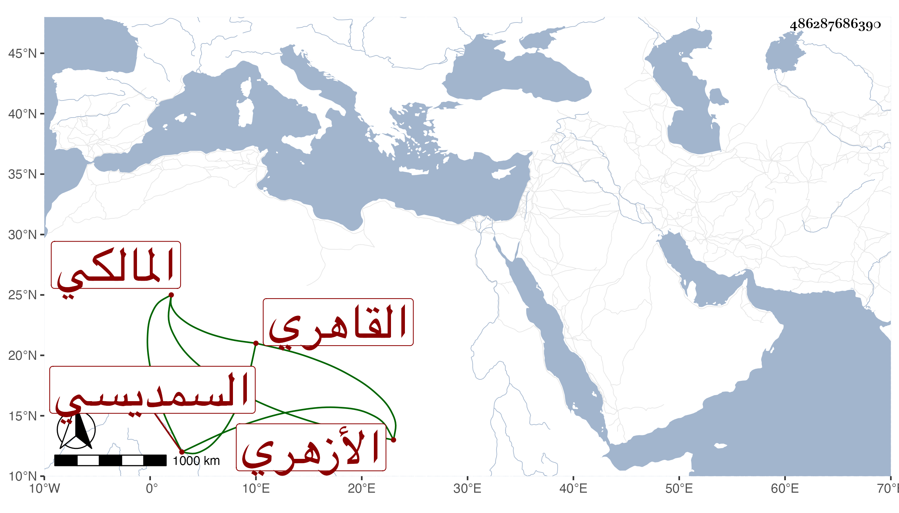

0902Sakhawi.DawLamic.ITO20230111-ara1.EIS1600.486287686390
Biography ID: 486287686390
776
موسى بن عبد الغفار بن محمد الشرف السمديسي الأصل القاهري الأزهري المالكي الماضي أبوه ويعرف بابن عبد الغفار . ولد سنة ست وأربعين تقريبا بالصحراء ونشأ فحفظ القرآن والعمدة والشاطبية والمختصر وجمع الجوامع وألفية النحو وغيرها وأخذ عن السنهوري واللقاني وغيرهما كالنور الوراق في الفقه وغيره وعن التقيين الشمني والحصني وكذا العلاء الحصني في العقليات وجود الخط عند ابن سعد الدين وتميز في الكتابة والتجليد والتذهيب وغيرها وحج مرارا أولها في سنة سبعين ، وناب في القضاء عن الحسام بن حريز فوض إليه يوم وفاة أبيه ثم عن من بعده وبرع في صناعته وصار أحد من عليه المعول أيام اللقاني وكثر فيه الكلام وتناقص بعده قليلا .
